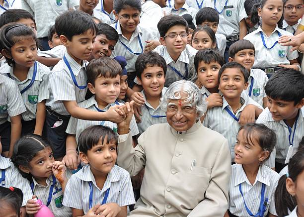
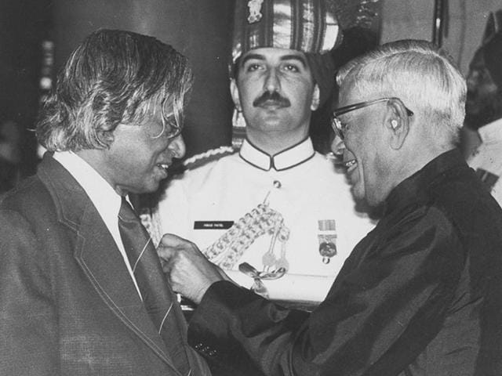
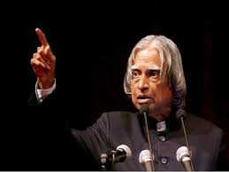

EarlyLife
Education
About
Early Life
- Full name:Avul Pakir Jainulabdeen Abdul Kalam
- Born in Rameswaram of Madras Presidency on 15th October 1931
- Dr. A P J Abdul Kalam was born to a poor Tamil Muslim family
- Kalam’s father, Jainulabudeen, was a boat owner and imam at a local mosque. His forefathers were wealthy, but due to business failures, the former President’s fortunes were lost, and he was forced to work odd jobs. In his family, Kalam was the youngest of four brothers and one sister. To supplement his father’s income, Kalam used to distribute newspapers after school.
Education
Early Schooling:Rameshwaram Elementary School
Secondary Schooling:Schwartz Higher Secondary School
Undergraduate:Saint Joseph’s College
Postgraduate:Madras Institute of Technology
About Kalam
Abdul Kalam had 7 doctorates, which may surprise you. During his lifetime, former President APJ Abdul Kalam, received honorary doctorates from 40 national and international universities.
He served as the 11th President of India from 2002 to 2007.
Kalam earned a degree in aeronautical engineering from the Madras Institute of Technology and in1958 joined the Defence Research and Development Organisation (DRDO).
In 1969, he moved to the Indian Space Research Organisation, where he was project director of the SLV-III, the first satellite launch vehicle that was both designed and produced in India.
He was in charge of the Agni and Prithvi missiles’ development and deployment. It is for this reason that he is known as India’s Missile Man. He was a firm believer in the concept of power commanding respect, and he believed that other nations would only respect India if we were powerful.
He also played a pivotal organisational, technical, and political role in India's Pokhran-II nuclear tests in 1998, the first since the original nuclear test by India in 1974.
In 2013, he was the recipient of the Von Braun Award from the National Space Society "to recognize excellence in the management and leadership of a space-related project".
Dr. Kalam has been awarded the Padma Bhushan (1981) and Padma Vibhushan (1990) civilian awards, as well as the highest civilian honour, the Bharat Ratna (1997).
While delivering a lecture at the Indian Institute of Management Shillong, Kalam collapsed and died from an apparent cardiac arrest on 27 July 2015, aged 83.
Wheeler Island, a national missile test site in Odisha, was renamed Kalam Island in September 2015.
A prominent road in New Delhi was renamed from Aurangzeb Road to Dr APJ Abdul Kalam Road in August 2015.
APJ Abdul Kalam’s autobiography, ‘Wings of Fire,’ was first published in English and has since been translated and published in 13 languages.
Gallery



